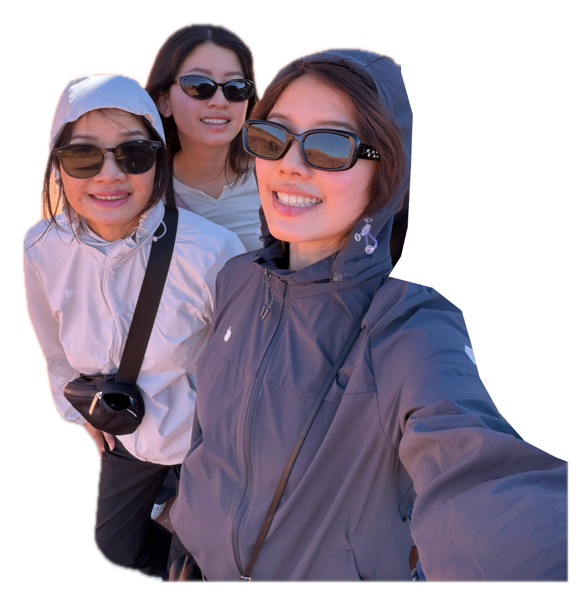

⛩️🌸🍡 ⭐🍵✨| 日期 | 主題 | 住 |
|---|---|---|
| 10/20 二 | KIX 17:15 落地 → 京都 · 只有晚餐 | The Thousand |
| 10/21 三 | 嵐山清晨 · 下午錦市場逛街 | The Thousand |
| 10/22 四 | 東山一條線：銀閣寺 → 無鄰菴 15:00 → 祇園黃昏 | The Thousand |
| 10/23 五 | 伏見稻荷 · 宇治抹茶 → 下午移動大阪 | 安嵐 |
| 10/24 六 | 大阪深度逛：黑門 → 中崎町 → 梅田 → 心齋橋 | 安嵐 |
| 10/25 日 | 08:35 出發 → KIX 12:20 飛 | — |
17:15 落地，日落 17:10。Day 1 只剩「抵達 + 入住 + 晚餐」，祇園黃昏拍照已搬到 10/22 傍晚。
12:20 起飛 → 08:35 離開飯店 → 08:50 南海新今宮 → 09:30 KIX。沒有大阪的早上，購物與黑門市場都要在 10/24 做完。
京都市區見頃是 11 月下旬，這次嵐山、東山、永觀堂都是綠的。
好消息：人潮比 11 月少很多，白天 21–23°C、早晚 12–14°C，是全年最舒服的季節。
錯過 Haruka：機場利木津巴士到京都站，約 90 分，營運到 23:00 左右。
HARUKA 末班約 20:15（以當日時刻表為準），不用在機場衝。
真的錯過：搭機場利木津巴士到京都站，約 90 分，營運到 23:00 左右。
祇王寺（人比竹林少一半）或嵯峨野小火車（需事先訂票）。
14:15 還沒走到南禪寺一帶，就直接跳去無鄰菴，其他全部放掉。落後時先砍：永觀堂 → 水路閣 → 銀閣寺縮短。
10/22 是無鄰菴唯一能去的一天。日落 17:10，八坂塔斜光只剩不到 1 小時。
花見小路私人小巷禁止拍照（有罰款）。
三個點都在 JR 奈良線同一方向，玩完回京都站取行李再去大阪，不繞路。
阪急 B1 伴手禮、松本清退稅。10/25 早上沒有補買的機會。
中崎町縮短 → KOMEHYO → mont-bell。
離開飯店。週日 KIX 一週最擠，留 2 小時 50 分不會太閒。
| 日期 | 路段 | 時間 | 票價 |
|---|---|---|---|
| 10/20 | KIX → 京都 JR HARUKA 要劃位 | 80 分 | 約 ¥3,640 |
| 10/21 | 京都站 → 嵯峨嵐山 | 16 分 | ¥240 |
| 10/22 | 京都站 ↔ 東山（公車 / 計程車） | 20–40 分 | 計程車約 ¥1,500 |
| 10/23 | 京都 → 稲荷 → 宇治 | 5 / 15 分 | ¥150 / ¥240 |
| 10/23 | 京都 → 新今宮 | 約 50 分 | 約 ¥760 |
| 10/25 | 新今宮 → KIX 南海 要買票 | 35 / 40 分 | ¥1,490 / ¥970 |
iPhone 錢包加 Suica，Apple Pay 儲值。JR、私鐵、地鐵、公車、便利商店都能刷。六天交通費約 ¥7,000／人，任何周遊券都回不了本。
京都站到銀閣寺搭公車 5／17 系統約 35–40 分，8:30 前出發。三人同行，計程車常更划算。
🍁 良い旅を